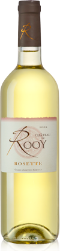

Photos du vignoble


Le vin est la boisson obtenue par la fermentation naturelle du jus de raisin mûr (transformation des sucres du fruit en alcool sous l’action biochimique de levures, organismes microscopiques qui prolifèrent d’eux-mêmes). En termes de composition, le vin est un ensemble d’éléments qui s’associent de manière complexe et inconstante : eau, sucres, alcools, esters, acides, minéraux, substances azotées, acétaldéhyde, substances phénoliques, pigments, vitamines… 2 à 3 % des composants du vin relèvent encore du mystère, d’où l’impossibilité de le reproduire en laboratoire.
En savoir plus 1958 : M. et Mme CARRERE héritent de la propriété de M. et Mme RAYMOND, parents de Mme CARRERE.
En 1998, Gilles Gérault reprend en fermage la propriété de Marie-Claire et Bernard CARRERE, viticulteurs retraités, et s'installe "Jeune Agriculteur" sur l'exploitation Rosette - Pécharmant. A cette occasion il rachète le matériel présent sur le domaine.
2000 : Après deux années d'exploitation du vignoble Gilles rachète les vignes et les bâtiments de Rosette (chai et hangar) et reste fermier à Pécharmant.
1an de travaux permettent l'inauguration du chai à barriques, première partie fermée du hangar.
En 2003, la surface de production de Pécharmant augmente grâce à un nouveau fermage. Depuis, le vignoble est en restructuration permanente avec une augmentation des densités de plantation (5000 pieds/ha).
2010 : Laetitia s'installe à son tour "Jeune Agricultrice" et s'associe avec Gilles pour créer l'EARL.
2010 : La nouvelle salle de dégustation est inaugurée.
2011 : C'est le début de nouveaux travaux d'agrandissement avec la construction d'un hangar pour le stockage du matériel et ainsi faire de la place pour le futur chai.
2012 : La construction du nouveau chai est lancée, il permettra d'accueillir les nouvelles cuves.